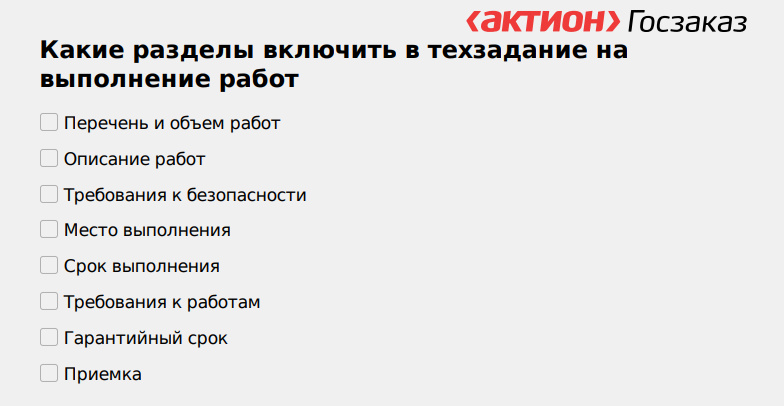

Как описать строительные и ремонтные работы
Чтобы описать работы по строительству и ремонту, составьте в техническое задание, в котором подробно опишите объект закупки. На этом уроке разберетесь, как описать строительные и ремонтные работы, а в допматериалах к уроку вы можете скачать образец технического задания на капитальный ремонт.

Применяйте типовые условия для контрактов на выполнение работ по строительству, реконструкции, капремонту и сносу объекта капстроительства (постановление Правительства от 29.06.2023 № 1066) – они дополнили контракты пунктами о порядке направления сторонами уведомлений, правах заказчика и подрядчика.
Среди обязанностей подрядчика – освободить участок от временных сооружений, техники и мусора не позже 10-го рабочего дня с даты завершения работ. Также передать исполнительную и иную документацию теперь необходимо заказчику в течение 10 дней с даты получения от него уведомления, если сделку расторгают до завершения работ.
В контракт необходимо включить обязанности заказчика содействовать подрядчику в исполнении обязательств и списывать неустойку, когда этого требует закон.
Как описать объект закупки
Чтобы описать объект закупки, определите, какие виды работ должен выполнить подрядчик. Составьте техническое задание, в которое включите перечень и объем работ.
Чтобы вы ничего не упустили, составляйте техзадание по чек-листу. Его можно распечатать и использовать в вашей дальнейшей работе.

Если закупаете оборудование, которое неразрывно связано с объектом строительства, – вы вправе объединить в один лот ремонт, поставку оборудования и монтаж.
Когда закупаете работы по строительству, реконструкции, капитальному ремонту или сносу объекта капитального строительства – включите в описание объекта закупки проектную документацию или типовую проектную документацию. Либо приложите смету на капремонт объекта капитального строительства. Включите в проектную документацию на строительство объекта характеристики технологического или инженерного оборудования, изделий и материалов с возможностью замены на аналоги.
Для описания объекта закупки достаточно разместить проектную документацию или смету в ЕИС. Составлять другие документы не нужно (п. 8 ч. 1 ст. 33 Закона № 44-ФЗ).
Вы вправе не размещать проектную документацию в трех случаях:
- не требуется согласно законодательству о градостроительной деятельности;
- заключаете контракт жизненного цикла (ч. 16 ст. 34 Закона № 44-ФЗ);
- заключаете контракт на проектирование, строительство и ввод в эксплуатацию объектов капитального строительства (ч. 16.1 ст. 34 Закона № 44-ФЗ).